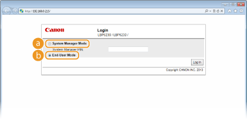
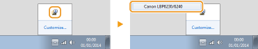
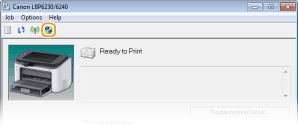

Starting the Remote UI
To operate the machine remotely, start the Remote UI by entering the machine's IP address in your Web browser. Before starting, check the IP address that has been assigned to the machine (Viewing Network Settings). If you do not know the machine's IP address, ask your network administrator, or start the Remote UI from the Printer Status Window (Starting from the Printer Status Window).
1
Start the Web browser.
2
Enter "http://<IP address of the machine>/" in the address field, and press the [ENTER] key.

If you are using an IPv6 address, enclose the IPv6 address with brackets (example: "http://[fe80:2e9e:fcff:fe4e:dbce]/").

If a host name for the machine is registered with a DNS server
Instead of <IP address of the machine>, you can enter <"host name"."domain name"> (example: "http://my_printer.example.com").
If a security alert is displayed
A security alert may be displayed when communication with the Remote UI is encrypted (Enabling SSL Encrypted Communication for the Remote UI). If there are no problems with certificate settings or SSL settings, continue browsing to the Remote UI site.
3
Select [System Manager Mode] or [End-User Mode].

 [System Manager Mode]
[System Manager Mode]You can perform all Remote UI operations and make all settings. If a PIN (system manager password) has been set, enter it in [System Manager PIN]. (Setting System Manager Passwords) If a PIN has not been set (factory default setting), you do not need to input anything.
 [End-User Mode]
[End-User Mode]You can check the status of documents or the machine, and you can also check the settings.
4
Click [Log In].
 |
The Portal Page (main page) of the Remote UI appears. Remote UI Screens
 |
Starting from the Printer Status Window
If you do not know the machine's IP address, you can start the Remote UI from the Printer Status Window.
1
Select the machine by clicking  in the system tray.
in the system tray.
in the system tray.
2
Click .

|
|
Your Web browser starts, and the login page of the Remote UI appears.
If a security alert is displayed
A security alert may be displayed when communication with the Remote UI is encrypted (Enabling SSL Encrypted Communication for the Remote UI). If there are no problems with certificate settings or SSL settings, continue browsing to the Remote UI site.
|
3
Select [System Manager Mode] or [End-User Mode].
[System Manager Mode]You can perform all Remote UI operations and make all settings. If a PIN (system manager password) has been set, enter it in [System Manager PIN]. (Setting System Manager Passwords). If a PIN has not been set (factory default setting), you do not need to input anything.
[End-User Mode]You can check print documents, check the status of the machine, and view machine settings.
4
Click [Log In].
|
|
The Portal Page (main page) of the Remote UI appears. Remote UI Screens
|